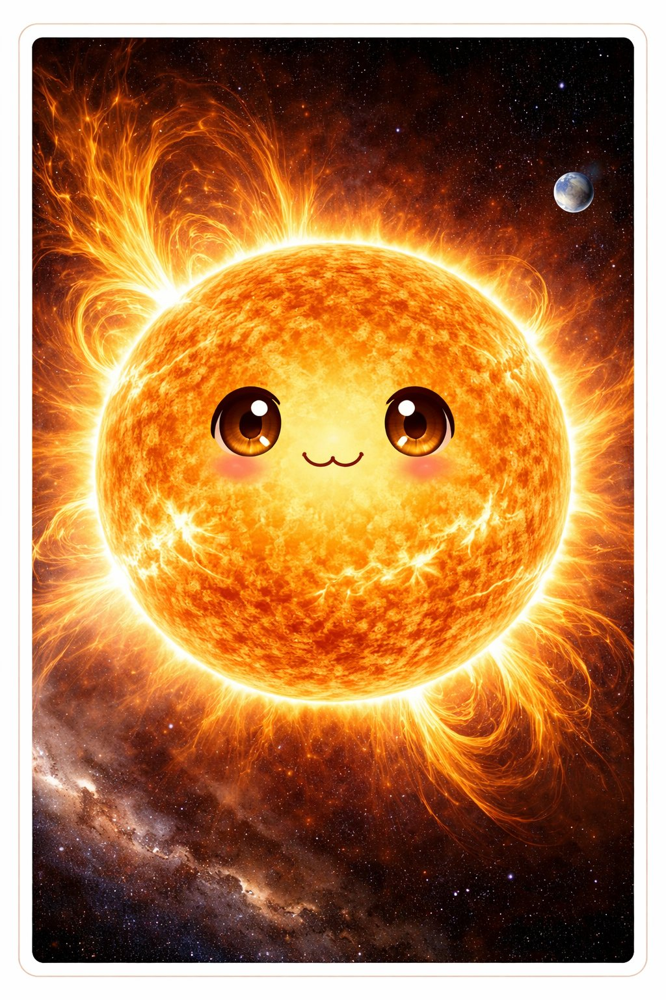
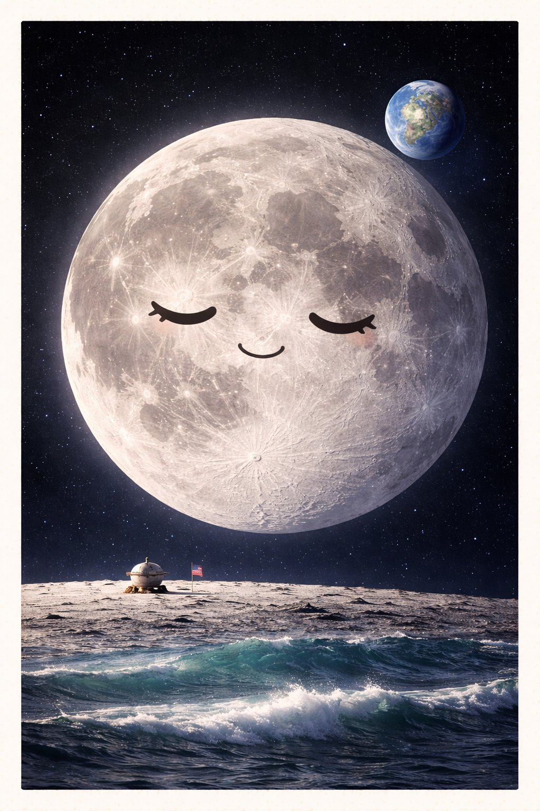
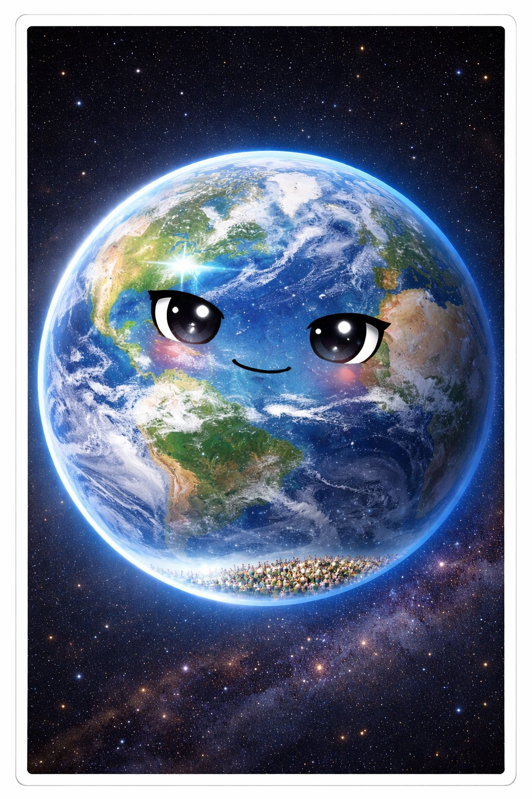
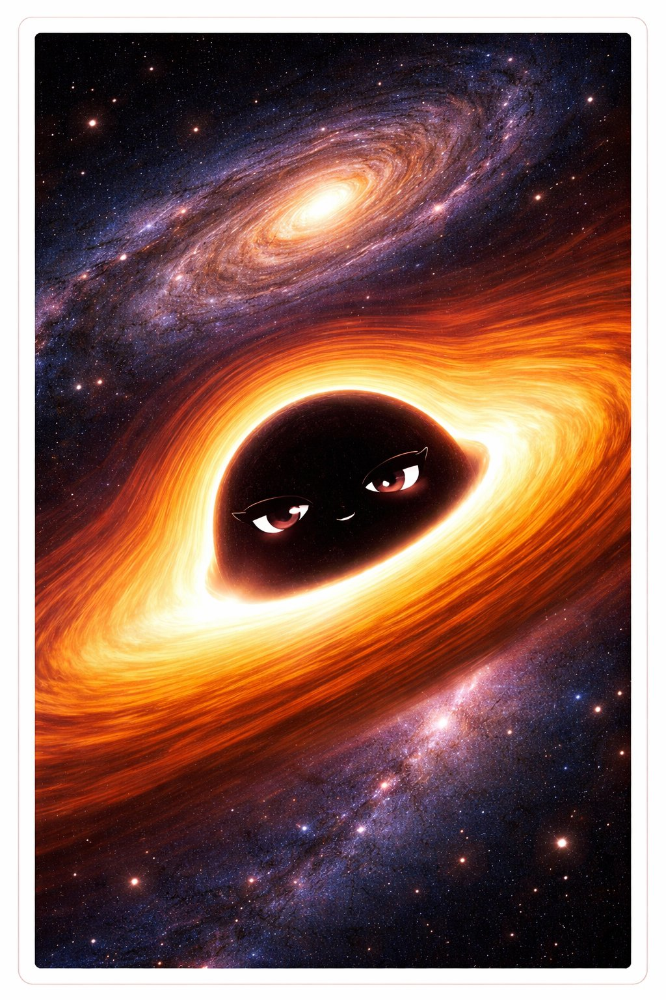

ほしたちの じこしょうかい
— 宇宙と天体の 138億年史 —
— 宇宙と天体の 138億年史 —
え：チャッピー ぶん：クロード かんしゅう：ケンシロウ
🌞🌙🌍🕳️🌑

📚 じこしょうかいシリーズ 第10巻
シリーズ一覧
シリーズ一覧
↓ スクロールして よんでね ↓
よるぞら を みあげたことが ある？
あの ひかりの つぶ、ひとつひとつが 太陽みたいな 星 だ。
なかには、もう しんでしまった 星の ひかりも ある。
何百年も まえに でた ひかりが、いま きみの 目に とどいている。
きみが 見ている よるぞらは、タイムマシン なんだ。
1
タイヨウは 太陽。地球から 約1億5000万km。ひかりの はやさで 8分。
太陽の なかでは、スイちゃん（水素）が 核融合して ヘリウムに なり、
毎秒 400万トン の 質量が エネルギーに かわっている。
地球の すべての エネルギーの みなもと。
植物の 光合成 → 動物の 食事 → 化石燃料 → ぜんぶ 太陽の ひかりの 変換。
太陽なしには、なにも はじまらなかった。

ツキちゃんは 月。地球の ただひとつの 衛星。
月の 引力が 潮の 満ち引き をつくり、地球の 自転軸を 安定させている。
月が なかったら 地球の 気候は もっと 不安定で、生命が うまれなかった かもしれない。
人間は 月を 見て 暦 をつくった。「1ヶ月」は 月の 満ち欠けの 周期（約29.5日）。
そして 1969年、人類は はじめて 月に 立った。

チキュウは 地球。いまのところ 宇宙で ゆいいつ 生命が 確認されている 天体。
ハビタブルゾーンに あり、磁場が 太陽風を はじき、大気が 宇宙線を ふせぐ。
この 奇跡的な 条件の 重なり が、いのちを まもっている。
でも 地球は にんげんの ものじゃない。
46億年の 歴史のうち、にんげんが いたのは 最後の 0.006% だけ。

ブラックホー先輩は ブラックホール。
巨大な 星が しんだあと、じぶんの 重力で つぶれてできる。
重力が つよすぎて 光すら にげられない。
でも ブラックホールは ただの「こわいもの」じゃない。
銀河の 中心には ほぼかならず 超巨大ブラックホール があり、
それが 銀河を まとめている。
テツ先輩（鉄）が 星の 死から うまれたように、
ブラックホー先輩は 星の 墓であり、銀河の 心臓 でもある。

ダークマタは ダークマター。宇宙の 物質の 約85% を 占める。
でも 光を 出さない、吸収しない、反射しない。だから 見えない。
「ある」とわかるのは、重力の 影響 だけ。
銀河の 回転速度を 計算すると、見える 物質だけでは ぜんぜん 足りない。
見えない なにかが 重力で 銀河を ささえている。それが ダークマター。
宇宙で いちばん おおくて、いちばん わからないもの。
タイヨウに おそわったこと — 「すべては ひかりから はじまる」。
ツキちゃんに おそわったこと — 「うつすだけでも、やくにたてる」。
チキュウに おそわったこと — 「きせきは、あたりまえの かおを している」。
ブラックホー先輩に おそわったこと — 「こわいものが、ささえている」。
ダークマタに おそわったこと — 「みえなくても、そこに いる」。
① スケール — 地球は太陽の100分の1。太陽は銀河の1000億分の1。きみは宇宙の かけら。
② 奇跡 — 地球にいのちがあるのは、ぜんぶが ちょうどよかったから。
③ 謎 — 宇宙の85%はまだわからない。わからないことがあるって、すばらしい。
きみが 見あげた よるぞらは、
138億年の れきしを うつす かがみ。